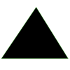

Database Gym
Begin →
Your task:
You will have
60 seconds
to:
 Create indexes
Set system-wide knobs
Configure per-query knobs
to optimize
three JOB queries
.
Once you press
Begin
, the timer will start and you'll see the queries and machine information.
Leaderboard Name:
 Set system-wide knobs
Set system-wide knobs
 Configure per-query knobs
Configure per-query knobs